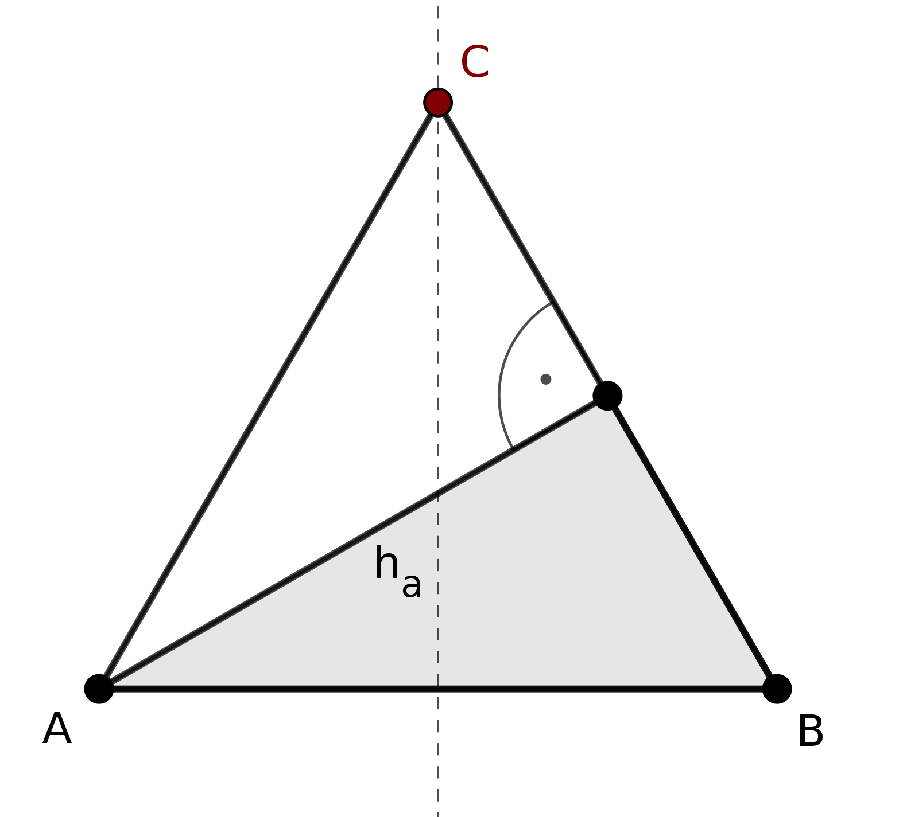

Aufgabe 1.4
Von einem gleichschenkligen Dreieck sind bekannt: die Basis $\overline{AB}=7$ cm und die Höhe $h_c= 6$ cm. Man konstruiere das Dreieck.
- Zeichnen Sie die Situation zunächst als Skizze.
- Welche besondere Eigenschaft hat die Höhe $h_c$ in einem gleichschenkligen Dreieck?
- Wo liegt der Fusspunkt der Höhe auf der Basis?
Gegeben: Basis $\overline{AB} = 7$ cm, Höhe $h_c = 6$ cm
Konstruktionsbericht:
- Zeichne die Strecke $\overline{AB} = 7$ cm
- Konstruiere die Mittelsenkrechte von $\overline{AB}$:
- Schlage Kreise mit gleichem Radius ($r > 3,5$ cm) um $A$ und $B$
- Verbinde die beiden Schnittpunkte der Kreise
- Der Schnittpunkt der Mittelsenkrechten mit $\overline{AB}$ sei $M$
- Trage auf der Mittelsenkrechten von $M$ aus die Höhe $h_c = 6$ cm ab. Der Endpunkt ist $C$
- Verbinde $C$ mit $A$ und $B$

Begründung: In einem gleichschenkligen Dreieck mit Basis $\overline{AB}$ liegt die Spitze $C$ auf der Mittelsenkrechten von $\overline{AB}$. Die Höhe $h_c$ steht senkrecht auf der Basis und verläuft durch deren Mittelpunkt. Daher ist die Konstruktion eindeutig.
Im Video: Etappe 6 · Winkelsumme im Dreieck bei 5:34